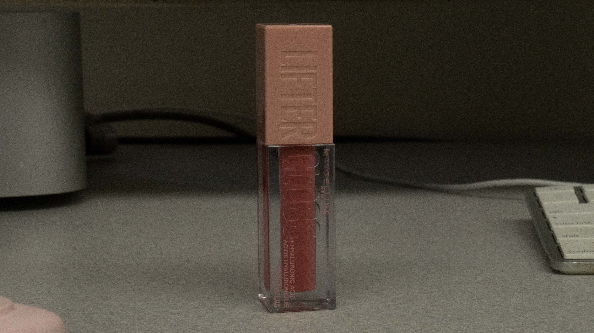
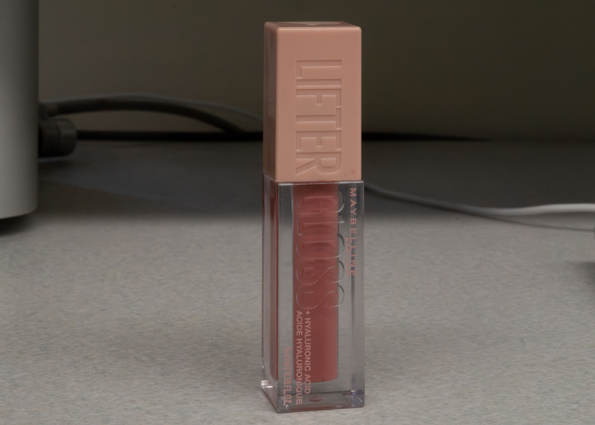

Shallow DOF


This image demonstrates shallow depth of field created in-camera. The main subject is sharp and clearly defined, while the background appears blurred. This separation draws attention to the subject and shows how focus can isolate a specific element within a scene.
Deep DOF
 This image demonstrates deep depth of field created in-camera. Both the subject and much of the surrounding environment remain in focus. The overall sharpness across the frame shows how depth of field can include more detail throughout the image.


This image demonstrates a shallow depth of field effect created in Photoshop using the Field Blur tool. The subject remains sharp while the background is digitally blurred. This shows how depth of field can be simulated in post-production to mimic in-camera techniques.